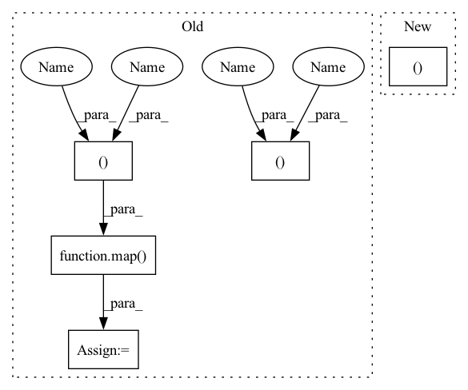

Pattern ID :1700
Before Change
def forward(self, feats, coors, mask = None):
h = self.heads
q , k, v = self.to_qkv(feats).chunk(3, dim = -1)
q, k, v = map( lambda t: rearrange(t, "b n (h d) -> b h n d", h = h), (q , k, v ))
if exists(mask):
mask = rearrange(mask, "b n -> b () n ()")
k.masked_fill_(~mask, -torch.finfo(k.dtype).max)After Change
def forward(self, x, queries, mask = None):
induced = self.attn1(queries, x, mask = mask)
out = self.attn2(x, induced)
return out, 0
class EquivariantAttention(nn.Module):
def __init__(
self,In pattern: SUPERPATTERN
Frequency: 6
Non-data size: 5
Instances Fragment ID: 8144508
Project Name: lucidrains/en-transformer
Commit Name: 6bd1817d780502d24a2515e850c9cd1600f24642
Time: 2021-06-04
Author: lucidrains@gmail.com
File Name: en_transformer/en_transformer.py
M Class Name: GlobalLinearAttention
N Class Name: GlobalLinearAttention
M Method Name: forward(4)
N Method Name: forward(4)
M Parent Class: nn.Module
N Parent Class: nn.Module
M File Name: en_transformer/en_transformer.py
N File Name: en_transformer/en_transformer.py
M Start Line: 132
M End Line: 151
N Start Line: 160
N End Line: 162
Before Change
def forward(self, feats, coors, mask = None):
h = self.heads
q, k, v = self.to_qkv(feats).chunk(3, dim = -1)
q, k, v = map( lambda t: rearrange(t, "b n (h d) -> b h n d", h = h), (q, k, v ))
if exists(mask):
mask = rearrange(mask, "b n -> b () n ()")
k.masked_fill_(~mask, -torch.finfo(k.dtype).max)After Change
def forward(self, x, queries, mask = None):
induced = self.attn1(queries, x, mask = mask)
out = self.attn2(x, induced)
return out, 0
class EquivariantAttention(nn.Module):
def __init__(
self, Fragment ID: 8144509
Project Name: lucidrains/en-transformer
Commit Name: 6bd1817d780502d24a2515e850c9cd1600f24642
Time: 2021-06-04
Author: lucidrains@gmail.com
File Name: en_transformer/en_transformer.py
M Class Name: GlobalLinearAttention
N Class Name: GlobalLinearAttention
M Method Name: forward(4)
N Method Name: forward(4)
M Parent Class: nn.Module
N Parent Class: nn.Module
M File Name: en_transformer/en_transformer.py
N File Name: en_transformer/en_transformer.py
M Start Line: 132
M End Line: 151
N Start Line: 160
N End Line: 162
Before Change
total_len = mem.shape[2] + lmem.shape[2] + self.seq_len
pos_emb = self.pos_emb[:, (self.seq_len - t):total_len]
next_mem = []
next_lmem = []
mem_iter, lmem_iter = map(iterate_tensor, (mem, lmem))
for ind, (attn, ff) in enumerate(zip(self.attn_layers, self.ff_layers)):
layer_num = ind + 1
use_memory = layer_num in self.memory_layers
memories = None
if use_memory:
memories = (next(mem_iter), next(lmem_iter))
x, (mem_out, lmem_out) = attn(x, memories = memories, calc_memory = use_memory, input_mask = mask, pos_emb = pos_emb)
x, = ff(x)
if use_memory:
next_mem.append(mem_out)
next_lmem.append(lmem_out)
out = self.to_logits(x)
next_mem, next_lmem = map(torch.stack, (next_mem, next_lmem))
next_mem, next_lmem = map( torch.detach, (next_mem, next_lmem ))
return out, Memory(short = next_mem, long = next_lmem)
After Change
for ind, (attn, ff) in enumerate(zip(self.attn_layers, self.ff_layers)):
layer_num = ind + 1
use_memory = layer_num in self.memory_layers
memories = map(next, (mem_iter, lmem_iter )) if use_memory else None
if use_memory:
hiddens.append(x) Fragment ID: 8144504
Project Name: lucidrains/memory-transformer-xl
Commit Name: cbabe1ae6fa311092a9d0a88116c079a5ad8d790
Time: 2020-07-22
Author: lucidrains@gmail.com
File Name: memory_transformer_xl/memory_transformer_xl.py
M Class Name: MemoryTransformerXL
N Class Name: MemoryTransformerXL
M Method Name: forward(4)
N Method Name: forward(4)
M Parent Class: nn.Module
N Parent Class: nn.Module
M File Name: memory_transformer_xl/memory_transformer_xl.py
N File Name: memory_transformer_xl/memory_transformer_xl.py
M Start Line: 255
M End Line: 296
N Start Line: 306
N End Line: 345
Before Change
// split heads
q, k, v = map( lambda t: rearrange(t, "b n (h d) -> (b h) n d", h = h), (q, k, v ))
// rotary embeddings
positions = self.rotary_emb(n, device = device)After Change
n, device, h = x.shape[1], x.device, self.heads
q, k, v = (self.to_q(x), *self.to_kv(x).chunk(2, dim = -1) )
// pre layernorm
Fragment ID: 8144488
Project Name: lucidrains/palm-pytorch
Commit Name: 100b3ee7d7209056a2e3ee20def4eecbd16dd4b6
Time: 2022-04-04
Author: lucidrains@gmail.com
File Name: palm_pytorch/palm_pytorch.py
M Class Name: Attention
N Class Name: Attention
M Method Name: forward(2)
N Method Name: forward(2)
M Parent Class: nn.Module
N Parent Class: nn.Module
M File Name: palm_pytorch/palm_pytorch.py
N File Name: palm_pytorch/palm_pytorch.py
M Start Line: 107
M End Line: 145
N Start Line: 108
N End Line: 149
Before Change
super().__init__()
self.latents = nn.Parameter(torch.randn(num_latents, latent_dim))
get_cross_attn = lambda: PreNorm(latent_dim, Attention(latent_dim, dim, heads = cross_heads, dim_head = cross_dim_head), context_dim = dim)
get_cross_ff = lambda: PreNorm(latent_dim, FeedForward(latent_dim))
get_latent_attn = lambda: PreNorm(latent_dim, Attention(latent_dim, heads = latent_heads, dim_head = latent_dim_head))
get_latent_ff = lambda: PreNorm(latent_dim, FeedForward(latent_dim))
get_cross_attn, get_cross_ff, get_latent_attn, get_latent_ff = map( cache_fn, (get_cross_attn, get_cross_ff, get_latent_attn, get_latent_ff ))
self.layers = nn.ModuleList([])
for i in range(depth):
should_cache = i > 0 and weight_tie_layersAfter Change
get_latent_attn = lambda: PreNorm(latent_dim, Attention(latent_dim, heads = latent_heads, dim_head = latent_dim_head))
get_latent_ff = lambda: PreNorm(latent_dim, FeedForward(latent_dim))
get_latent_attn, get_latent_ff = map(cache_fn, (get_latent_attn, get_latent_ff))
self.layers = nn.ModuleList([])
cache_args = {"_cache": weight_tie_layers} Fragment ID: 8144473
Project Name: lucidrains/perceiver-pytorch
Commit Name: dc530de88e6035a2f08d7e35ce23e57abe8371bd
Time: 2021-08-30
Author: lucidrains@gmail.com
File Name: perceiver_pytorch/perceiver_io.py
M Class Name: PerceiverIO
N Class Name: PerceiverIO
M Method Name: __init__(1)
N Method Name: __init__(1)
M Parent Class: nn.Module
N Parent Class: nn.Module
M File Name: perceiver_pytorch/perceiver_io.py
N File Name: perceiver_pytorch/perceiver_io.py
M Start Line: 126
M End Line: 152
N Start Line: 125
N End Line: 143
Before Change
k_img, v_img = map(lambda t: F.unfold(t, kernel_size, padding = padding, dilation = dilation), (k_img, v_img))
k_img, v_img = map(lambda t: rearrange(t, "b (d j) i -> b i j d", j = kernel_size ** 2), (k_img, v_img))
k_text, v_text = map( lambda t: repeat(t, "b j d -> b i j d", i = img_seq_len), (k_text, v_text ))
// let image attend to all of text
k_img = torch.cat((k_text, k_img), dim = 2)After Change
// aggregate
attn_image_to_text, attn_image = attn[..., :text_len], attn[..., text_len:]
out_image_to_image = einsum("b i j, b i j d -> b i d", attn_image, v_img)
out_image_to_text = einsum("b i j, b j d -> b i d", attn_image_to_text, v_text)
Fragment ID: 8144480
Project Name: lucidrains/dalle-pytorch
Commit Name: f14a313431e9072bef9a8219ea3d99d7683ada06
Time: 2021-04-22
Author: lucidrains@gmail.com
File Name: dalle_pytorch/attention.py
M Class Name: SparseConvCausalAttention
N Class Name: SparseConvCausalAttention
M Method Name: forward(3)
N Method Name: forward(3)
M Parent Class: nn.Module
N Parent Class: nn.Module
M File Name: dalle_pytorch/attention.py
N File Name: dalle_pytorch/attention.py
M Start Line: 116
M End Line: 168
N Start Line: 94
N End Line: 173
Before Change
heads, r = self.heads, self.reduction_ratio
q, k, v = self.to_qkv(x).chunk(3, dim = 1)
k, v = map( lambda t: reduce(t, "b c (h r1) (w r2) -> b c h w", "mean", r1 = r, r2 = r), (k, v ))
q, k, v = map(lambda t: rearrange(t, "b (h c) x y -> (b h) (x y) c", h = heads), (q, k, v))
sim = einsum("b i d, b j d -> b i j", q, k) * self.scaleAfter Change
h, w = x.shape[-2:]
heads = self.heads
q, k, v = (self.to_q(x), *self.to_kv(x).chunk(2, dim = 1) )
q, k, v = map(lambda t: rearrange(t, "b (h c) x y -> (b h) (x y) c", h = heads), (q, k, v))
sim = einsum("b i d, b j d -> b i j", q, k) * self.scale Fragment ID: 8144513
Project Name: lucidrains/segformer-pytorch
Commit Name: 7ab3c29d960d9dea11417a98a7922b2a624961c1
Time: 2021-06-18
Author: lucidrains@gmail.com
File Name: segformer_pytorch/segformer_pytorch.py
M Class Name: EfficientSelfAttention
N Class Name: EfficientSelfAttention
M Method Name: forward(2)
N Method Name: forward(2)
M Parent Class: nn.Module
N Parent Class: nn.Module
M File Name: segformer_pytorch/segformer_pytorch.py
N File Name: segformer_pytorch/segformer_pytorch.py
M Start Line: 49
M End Line: 52
N Start Line: 49
N End Line: 51